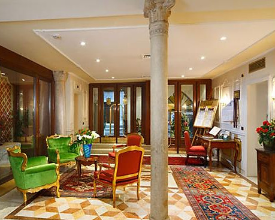

Johnnie and Oberta Baker's Photo Album Previous Gallery Next
|

The lobby of the Ca dei Conti Hotel. The building that hosts this 4 star hotel boasts an illustrious past:. Built in the XVIII century, it belonged to the aristocratic Armenian Sherimann family until the end of the 1800's. Their coat of arms is recognized in the precious Carrara marble floor in the hall. The hotel was recently renovated and is today equipped with all the most modern comforts, such as an elevator, to offer its guests a most comfortable stay. |